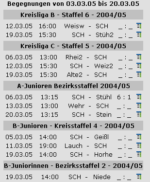

Viewer
Der Viewer ist ein Addon für den LMO 4. Er stellt die Begegnungen beliebiger und beliebig vieler Teams der vorherigen/nächsten XX Tage ab aktuellem Datum dar und zwar liegenübergreifend. Obwohl größtenteils über den Adminbereich konfigurierbar ist der Viewer ein eigenständiges Script, welches an beliebiger Stelle der Website eingebaut werden kann. Über Templates lässt sich die Ausgabe beliebig anpassen.
[nach oben]Templates
Ähnlich wie beim LMO können Sie auch den Viewer in Struktur und Design beliebig ändern. Diese sind im Verzeichnis template/viewer abgelegt. Dort sind auch Template-Beispiele zu finden.
Globale Variablen
- <!--Titelzeile-->
- Konfigurierte Titelzeile
- <!--VERSION-->
- Der kleine Copyrighthinweis mit Versionsinformationen. Es ist nicht erlaubt, diesen Hinweis zu ändern oder zu entfernen!
Ligenblock
- <!-- BEGIN Liga -->
- <!-- END Liga -->
- Inhaltsblock einer Liga Beachten Sie die Leerzeichen vor BEGIN und nach Liga!
- Folgende Teile sind nur innerhalb <!-- BEGIN/END Liga --> sinnvoll
- <!--Ligadatum-->
- Speicherdatum der Liga
- <!--Liganame-->
- Name der Liga
- <!--ErgebnisLink-->
- Link zur Ergebnisübersicht der Liga
- <!--Anfangsspieltag-->
- <!--Endespieltag-->
- Erster und letzter ausgegebener Spieltag (Nur sinnvoll bei spieltagsweiser Anzeige)
- <!--Spieltageminus-->
- <!--Spieltageplus-->
- Anzeige, wie viele Spieltage nach hinten/vorn ausgegeben werden (Nur sinnvoll bei spieltagsweiser Anzeige)
- <!--Anfangsdatum-->
- <!--Enddatum-->
- Anzeige, wie viele Tage nach hinten/vorn ausgegeben werden (Nur sinnvoll bei datumsweiser Anzeige)
Spieltagsblock
- <!-- BEGIN Spieltag -->
- <!-- END Spieltag -->
- Inhaltsblock eines einzelnen Spieltag (Nur sinnvoll bei spieltagsweiser Anzeige) Beachten Sie die Leerzeichen vor BEGIN und nach Spieltag!
- Folgende Teile sind nur innerhalb <!-- BEGIN/END Spieltag --> sinnvoll
- <!--AktSpieltag-->
- Dieser Spieltag
- <!--AktSpieltagLink-->
- Link zur Ergebnisübersicht für diesen Spieltag
Inhaltsblock (Spiel)
- <!-- BEGIN Inhalt -->
- <!-- END Inhalt -->
- Inhaltsblock eines einzelnes Spiels Beachten Sie die Leerzeichen vor BEGIN und nach Inhalt!
- Folgende Teile sind nur innerhalb <!-- BEGIN/END Inhalt --> sinnvoll
- <!--Heim-->
- <!--Gast-->
- Namen der Teams in der konfigurierten Länge
- <!--HeimLang-->
- <!--GastLang-->
- <!--HeimMittel-->
- <!--GastMittel-->
- <!--HeimKurz-->
- <!--GastKurz-->
- Namen der Teams in den unterschideliche Längen
- <!--ToreHeim-->
- <!--ToreGast-->
- Tore der Teams (einzeln)
- <!--Tore-->
- Spielergebnis in der Form x:y
- <!--Datum-->
- Spieldatum
- <!--Uhrzeit-->
- Uhrzeit des Spiel
- <!--Spieltag-->
- Spieltag des Spiels
- <!--Iconheim-->
- <!--Icongast-->
- <!--IconMiddleheim-->
- <!--IconMiddlegast-->
- <!--IconBigheim-->
- <!--IconBiggast-->
- <!--IconBigheimalt-->
- <!--IconBiggastalt-->
- Teamicons in verschidenen Größen
- <!--Notiz-->
- Spielnotiz
- <!--Tabellenlink-->
- Link zur Tabelle
- <!--Spieltaglink-->
- Link zur Ergebnisansicht des Spieltag
- <!--Spielbericht-->
- Link zum Spielbericht
- <!--Zeilenklasse-->
- Hervorhebung des heutigen Datum (normal: vRow, heute: vRowHighlight)
- <!--Ligadatum-->
- Speicherdatum der Liga
- <!--Liganame-->
- Name der Liga